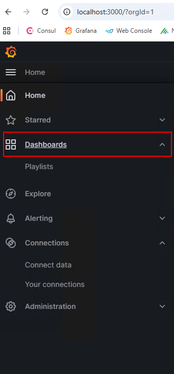
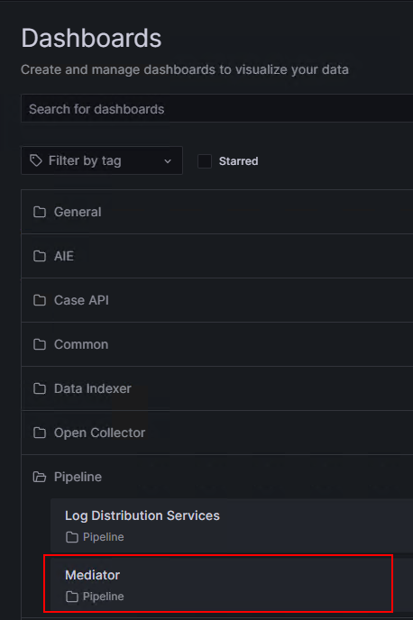
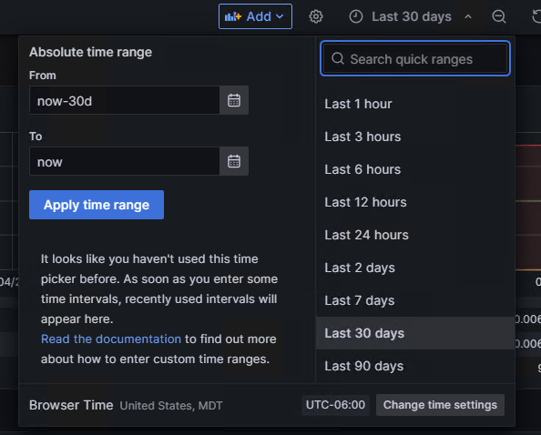
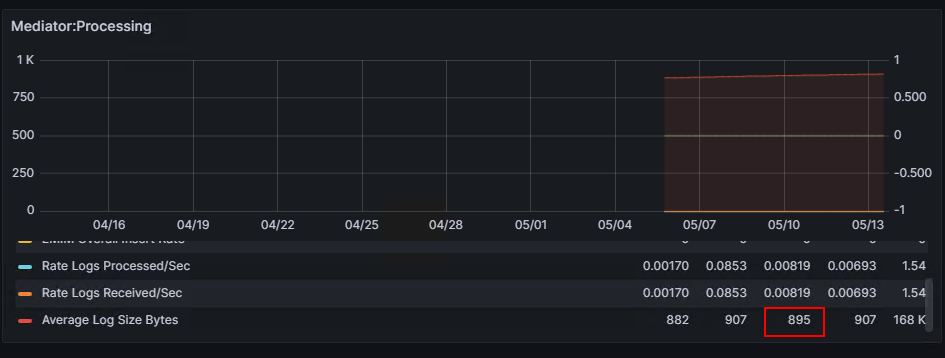

"""
)
# Replace popup with link
popup_pattern = re.compile(
r'
.*?\s*
\(800 is default\):',
re.DOTALL
)
popup_replacement = """
?
(800 is default):
"""
html = popup_pattern.sub(popup_replacement, html, count=1)
# Add custom round function
html = html.replace(
" function asNumber(value){",
"""
function customRound(value){
const whole = Math.floor(value);
const decimal = value - whole;
return decimal < 0.20 ? whole : Math.ceil(value);
}
function asNumber(value){
"""
)
# Update tier calculation
html = html.replace(
""" document.getElementById('gbResult').textContent =
gibPerDay.toFixed(2) + ' GiB/day';""",
""" document.getElementById('gbResult').textContent =
gibPerDay.toFixed(2) + ' GiB/day';
const recommendedTier =
Math.ceil(gibPerDay / 25) * 25;
document.getElementById('tierResult').textContent =
recommendedTier + ' GB/day';"""
)
# Clear tier
html = html.replace(
""" document.getElementById('gbResult').textContent = '0 GiB/day';
setError('error1', '');""",
""" document.getElementById('gbResult').textContent = '0 GiB/day';
document.getElementById('tierResult').textContent =
'0 GB/day';
setError('error1', '');"""
)
# Fix searchable TB
html = html.replace(
""" const searchableTB =
(ingestRate * DAYS_PER_MONTH * searchableMonthsTotal) / 1000;""",
""" const searchableTB =
(ingestRate * DAYS_PER_MONTH * additionalSearchable) / 1000;"""
)
# Apply custom rounding
html = html.replace(
"Math.ceil(searchableTB) + ' TB';",
"customRound(searchableTB) + ' TB';"
)
html = html.replace(
"Math.ceil(archiveTB) + ' TB';",
"customRound(archiveTB) + ' TB';"
)
main_output = Path('/mnt/data/Exabeam_Calculator_v1.8.html')
main_output.write_text(html, encoding='utf-8')
average_html = """
Average Log Size
Average Log Size
To get the average byte size per log, follow these steps:
Remote access into the XM/platform manager.
Open a browser and pull up:
https://localhost:3000
Select Mediator. If your Grafana doesn’t look like my screenshot,
you can search “mediator” in the search bar to locate the dashboard.
The Mediator: Processing widget will show the
Average Log Size in Bytes for the timeframe of your choosing.
I recommend a metric timeframe of at least 2 weeks if not greater.
If your dashboard doesn’t have a “Processing” widget, there should
be another widget that shows the “Avg Log Size” in KiB.
"""
avg_output = Path('/mnt/data/averagelogsize.html')
avg_output.write_text(average_html, encoding='utf-8')
print("Created:")
print(main_output)
print(avg_output)
STDOUT/STDERR
Created:
/mnt/data/Exabeam_Calculator_v1.8.html
/mnt/data/averagelogsize.html
Updated files created with ONLY the approved changes:
Tab 1 green question mark now opens:
averagelogsize.html
The old hover popup was removed
Your Average Log Size instructions page was created
Downloads:
Main Calculator v1.8
averagelogsize.html
1.png
2.png
3.png
4.png
Ok lets focus on the Averagelogsize html.
I want to add pictures to these. Place them where appropriate.
Thought for a few seconds
Analyzed
from pathlib import Path
import zipfile
avg_html = """
Average Log Size
Average Log Size
To get the average byte size per log, follow these steps:
1. Open Grafana on the XM/Platform Manager
Remote access into the XM/platform manager.
Open a browser and pull up:
https://localhost:3000
2. Open Dashboards
In Grafana, select Dashboards from the left navigation menu.

Select Dashboards from the left-side Grafana menu.
3. Select the Mediator Dashboard
Under the Pipeline folder, select Mediator.
If your Grafana doesn’t look like the screenshot, you can search
“mediator” in the search bar to locate the dashboard.

Open the Mediator dashboard under Pipeline.
4. Choose a Timeframe
Choose the timeframe you want to use for the metric. I recommend a metric
timeframe of at least 2 weeks, if not greater.

Use the Grafana time picker to select the desired timeframe.
5. Locate Average Log Size
The Mediator: Processing widget will show the
Average Log Size in Bytes for the timeframe of your choosing.

Use the Average Log Size Bytes value from the Mediator: Processing widget.
If your dashboard doesn’t have a “Processing” widget, there should
be another widget that shows the “Avg Log Size” in KiB.
"""
out_dir = Path('/mnt/data/averagelogsize_package')
out_dir.mkdir(exist_ok=True)
html_path = out_dir / 'averagelogsize.html'
html_path.write_text(avg_html, encoding='utf-8')
for name in ['1.png', '2.png', '3.png', '4.png']:
src = Path('/mnt/data') / name
dst = out_dir / name
if src.exists():
dst.write_bytes(src.read_bytes())
zip_path = Path('/mnt/data/averagelogsize_with_images.zip')
with zipfile.ZipFile(zip_path, 'w', zipfile.ZIP_DEFLATED) as z:
z.write(html_path, arcname='averagelogsize.html')
for name in ['1.png', '2.png', '3.png', '4.png']:
p = out_dir / name
if p.exists():
z.write(p, arcname=name)
standalone_html = Path('/mnt/data/averagelogsize.html')
standalone_html.write_text(avg_html, encoding='utf-8')
print("Created updated Average Log Size page and ZIP package.")
print(standalone_html)
print(zip_path)
STDOUT/STDERR
Created updated Average Log Size page and ZIP package.
/mnt/data/averagelogsize.html
/mnt/data/averagelogsize_with_images.zip
Done.
Download the full package with the HTML and images together:
Download averagelogsize_with_images.zip
Individual updated HTML:
Download averagelogsize.html
Average Log Size
Average Log Size
To get the average byte size per log, follow these steps:
1. Open Grafana on the XM/Platform Manager
Remote access into the XM/platform manager.
Open a browser and pull up:
https://localhost:3000
2. Open Dashboards
In Grafana, select Dashboards from the left navigation menu.
Select Dashboards from the left-side Grafana menu.
3. Select the Mediator Dashboard
Under the Pipeline folder, select Mediator.
If your Grafana doesn’t look like the screenshot, you can search
“mediator” in the search bar to locate the dashboard.
Open the Mediator dashboard under Pipeline.
4. Choose a Timeframe
Choose the timeframe you want to use for the metric. I recommend a metric
timeframe of at least 2 weeks, if not greater.
Use the Grafana time picker to select the desired timeframe.
5. Locate Average Log Size
The Mediator: Processing widget will show the
Average Log Size in Bytes for the timeframe of your choosing.
Use the Average Log Size Bytes value from the Mediator: Processing widget.
If your dashboard doesn’t have a “Processing” widget, there should
be another widget that shows the “Avg Log Size” in KiB.